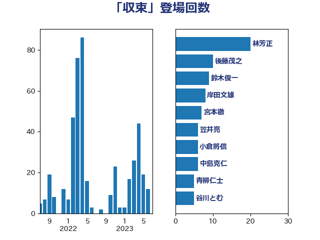

単語「収束」

| 林芳正 | 自由民主党 | 20 回 |
| 後藤茂之 | 自由民主党 | 10 回 |
| 鈴木俊一 | 自由民主党 | 9 回 |
| 岸田文雄 | 自由民主党 | 8 回 |
| 宮本徹 | 日本共産党 | 7 回 |
| 笠井亮 | 日本共産党 | 6 回 |
| 小倉將信 | 自由民主党 | 6 回 |
| 中島克仁 | 立憲民主党 | 6 回 |
| 青柳仁士 | 日本維新の会 | 5 回 |
| 谷川とむ | 自由民主党 | 5 回 |
| 田村まみ | 国民民主党 | 5 回 |
| 山崎誠 | 立憲民主党 | 5 回 |
| 小沼巧 | 立憲民主党 | 5 回 |
| 塩田博昭 | 公明党 | 5 回 |
| 古川元久 | 国民民主党 | 5 回 |
| 阿部知子 | 立憲民主党 | 4 回 |
| 西田実仁 | 公明党 | 4 回 |
| 礒崎哲史 | 国民民主党 | 4 回 |
| 石井章 | 日本維新の会 | 4 回 |
| 田村智子 | 日本共産党 | 4 回 |
| 池下卓 | 日本維新の会 | 4 回 |
| 永岡桂子 | 自由民主党 | 4 回 |
| 末松信介 | 自由民主党 | 4 回 |
| 徳永久志 | 無所属 | 4 回 |
| 山本香苗 | 公明党 | 4 回 |
| 北神圭朗 | 無所属 | 4 回 |
| 倉林明子 | 日本共産党 | 4 回 |
| 高木宏壽 | 自由民主党 | 3 回 |
| 馬場伸幸 | 日本維新の会 | 3 回 |
| 酒井庸行 | 自由民主党 | 3 回 |
| 谷公一 | 自由民主党 | 3 回 |
| 西村康稔 | 自由民主党 | 3 回 |
| 石井啓一 | 公明党 | 3 回 |
| 浜地雅一 | 公明党 | 3 回 |
| 橋本岳 | 自由民主党 | 3 回 |
| 山口那津男 | 公明党 | 3 回 |
| 小宮山泰子 | 立憲民主党 | 3 回 |
| 住吉寛紀 | 日本維新の会 | 3 回 |
| 井坂信彦 | 立憲民主党 | 3 回 |
| 高橋千鶴子 | 日本共産党 | 2 回 |
| 鈴木義弘 | 国民民主党 | 2 回 |
| 谷田川元 | 立憲民主党 | 2 回 |
| 萩生田光一 | 自由民主党 | 2 回 |
| 菊田真紀子 | 立憲民主党 | 2 回 |
| 緑川貴士 | 立憲民主党 | 2 回 |
| 田中健 | 国民民主党 | 2 回 |
| 牧義夫 | 立憲民主党 | 2 回 |
| 源馬謙太郎 | 立憲民主党 | 2 回 |
| 森本真治 | 立憲民主党 | 2 回 |
| 柴田巧 | 日本維新の会 | 2 回 |
| 松本洋平 | 自由民主党 | 2 回 |
| 東徹 | 日本維新の会 | 2 回 |
| 杉尾秀哉 | 立憲民主党 | 2 回 |
| 木村英子 | れいわ新選組 | 2 回 |
| 掘井健智 | 日本維新の会 | 2 回 |
| 御法川信英 | 自由民主党 | 2 回 |
| 庄子賢一 | 公明党 | 2 回 |
| 川田龍平 | 立憲民主党 | 2 回 |
| 岬麻紀 | 日本維新の会 | 2 回 |
| 山際大志郎 | 自由民主党 | 2 回 |
| 山田美樹 | 自由民主党 | 2 回 |
| 山井和則 | 立憲民主党 | 2 回 |
| 小池晃 | 日本共産党 | 2 回 |
| 小川淳也 | 立憲民主党 | 2 回 |
| 宮崎勝 | 公明党 | 2 回 |
| 塩川鉄也 | 日本共産党 | 2 回 |
| 吉田久美子 | 公明党 | 2 回 |
| 吉田とも代 | 日本維新の会 | 2 回 |
| 古川康 | 自由民主党 | 2 回 |
| 加藤勝信 | 自由民主党 | 2 回 |
| 伊藤岳 | 日本共産党 | 2 回 |
| 青柳陽一郎 | 立憲民主党 | 1 回 |
| 阿部司 | 日本維新の会 | 1 回 |
| 長谷川岳 | 自由民主党 | 1 回 |
| 長妻昭 | 立憲民主党 | 1 回 |
| 長友慎治 | 国民民主党 | 1 回 |
| 鈴木貴子 | 自由民主党 | 1 回 |
| 鈴木英敬 | 自由民主党 | 1 回 |
| 金村龍那 | 日本維新の会 | 1 回 |
| 金子恵美 | 立憲民主党 | 1 回 |
| 金子恭之 | 自由民主党 | 1 回 |
| 野田聖子 | 自由民主党 | 1 回 |
| 野田国義 | 立憲民主党 | 1 回 |
| 野村哲郎 | 自由民主党 | 1 回 |
| 進藤金日子 | 自由民主党 | 1 回 |
| 近藤昭一 | 立憲民主党 | 1 回 |
| 輿水恵一 | 公明党 | 1 回 |
| 赤澤亮正 | 自由民主党 | 1 回 |
| 赤池誠章 | 自由民主党 | 1 回 |
| 赤嶺政賢 | 日本共産党 | 1 回 |
| 谷合正明 | 公明党 | 1 回 |
| 藤原崇 | 自由民主党 | 1 回 |
| 蓮舫 | 立憲民主党 | 1 回 |
| 菅義偉 | 自由民主党 | 1 回 |
| 菅家一郎 | 自由民主党 | 1 回 |
| 船橋利実 | 自由民主党 | 1 回 |
| 紙智子 | 日本共産党 | 1 回 |
| 簗和生 | 自由民主党 | 1 回 |
| 福田達夫 | 自由民主党 | 1 回 |
| 福島伸享 | 無所属 | 1 回 |
| 福島みずほ | 社会民主党 | 1 回 |
| 福山哲郎 | 立憲民主党 | 1 回 |
| 神谷宗幣 | 参政党 | 1 回 |
| 石橋通宏 | 立憲民主党 | 1 回 |
| 石川香織 | 立憲民主党 | 1 回 |
| 石川博崇 | 公明党 | 1 回 |
| 石垣のりこ | 立憲民主党 | 1 回 |
| 石井正弘 | 自由民主党 | 1 回 |
| 田村憲久 | 自由民主党 | 1 回 |
| 田名部匡代 | 立憲民主党 | 1 回 |
| 生稲晃子 | 自由民主党 | 1 回 |
| 玉木雄一郎 | 国民民主党 | 1 回 |
| 牧野たかお | 自由民主党 | 1 回 |
| 牧山ひろえ | 立憲民主党 | 1 回 |
| 片山大介 | 日本維新の会 | 1 回 |
| 湯原俊二 | 立憲民主党 | 1 回 |
| 渡辺博道 | 自由民主党 | 1 回 |
| 浦野靖人 | 日本維新の会 | 1 回 |
| 浜口誠 | 国民民主党 | 1 回 |
| 浅野哲 | 国民民主党 | 1 回 |
| 泉田裕彦 | 自由民主党 | 1 回 |
| 河西宏一 | 公明党 | 1 回 |
| 水野素子 | 立憲民主党 | 1 回 |
| 水岡俊一 | 立憲民主党 | 1 回 |
| 櫛渕万里 | れいわ新選組 | 1 回 |
| 横山信一 | 公明党 | 1 回 |
| 松野明美 | 日本維新の会 | 1 回 |
| 松野博一 | 自由民主党 | 1 回 |
| 松木けんこう | 立憲民主党 | 1 回 |
| 松山政司 | 自由民主党 | 1 回 |
| 杉本和巳 | 日本維新の会 | 1 回 |
| 杉久武 | 公明党 | 1 回 |
| 末次精一 | 立憲民主党 | 1 回 |
| 有村治子 | 自由民主党 | 1 回 |
| 早稲田ゆき | 立憲民主党 | 1 回 |
| 新藤義孝 | 自由民主党 | 1 回 |
| 斎藤アレックス | 国民民主党 | 1 回 |
| 斉藤鉄夫 | 公明党 | 1 回 |
| 打越さく良 | 立憲民主党 | 1 回 |
| 志位和夫 | 日本共産党 | 1 回 |
| 川合孝典 | 国民民主党 | 1 回 |
| 島村大 | 自由民主党 | 1 回 |
| 岩渕友 | 日本共産党 | 1 回 |
| 岡本あき子 | 立憲民主党 | 1 回 |
| 山本太郎 | れいわ新選組 | 1 回 |
| 山本博司 | 公明党 | 1 回 |
| 山口壯 | 自由民主党 | 1 回 |
| 小野泰輔 | 日本維新の会 | 1 回 |
| 小西洋之 | 立憲民主党 | 1 回 |
| 小田原潔 | 自由民主党 | 1 回 |
| 小熊慎司 | 立憲民主党 | 1 回 |
| 寺田静 | 無所属 | 1 回 |
| 奥下剛光 | 日本維新の会 | 1 回 |
| 太栄志 | 立憲民主党 | 1 回 |
| 大野泰正 | 自由民主党 | 1 回 |
| 大野敬太郎 | 自由民主党 | 1 回 |
| 大石あきこ | れいわ新選組 | 1 回 |
| 大島敦 | 立憲民主党 | 1 回 |
| 大塚耕平 | 国民民主党 | 1 回 |
| 塚田一郎 | 自由民主党 | 1 回 |
| 堀井学 | 自由民主党 | 1 回 |
| 吉田宣弘 | 公明党 | 1 回 |
| 吉川元 | 立憲民主党 | 1 回 |
| 加田裕之 | 自由民主党 | 1 回 |
| 佐藤英道 | 公明党 | 1 回 |
| 伴野豊 | 立憲民主党 | 1 回 |
| 伊東信久 | 日本維新の会 | 1 回 |
| 三木圭恵 | 日本維新の会 | 1 回 |
| 三宅伸吾 | 自由民主党 | 1 回 |
| 一谷勇一郎 | 日本維新の会 | 1 回 |
| こやり隆史 | 自由民主党 | 1 回 |